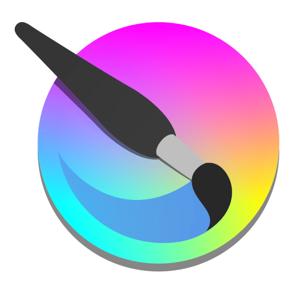
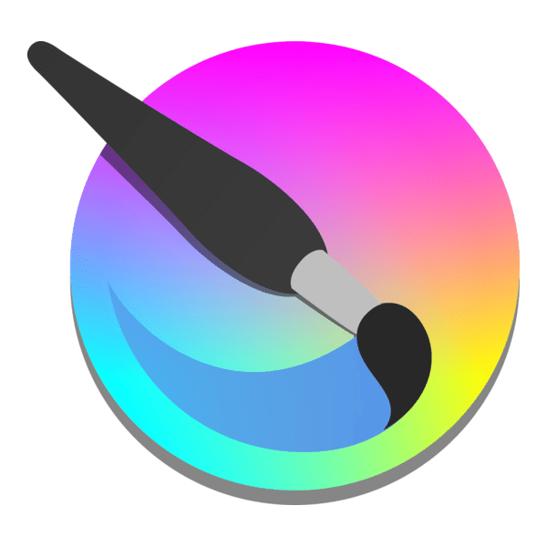
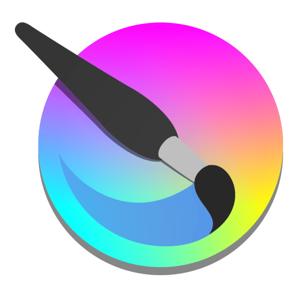
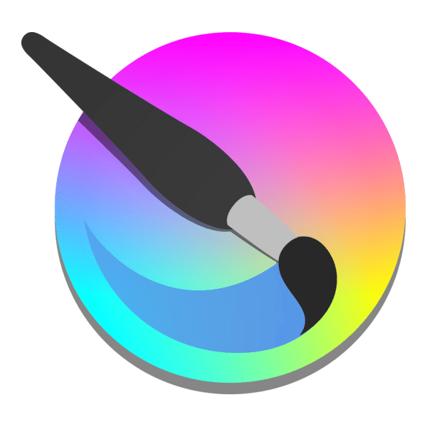

 


I’m Muhammad Umer Khan — a self-taught designer, developer, and builder with a passion for turning ideas into working systems. My journey hasn’t been linear: I paused academics for four years to commit to a higher purpose, and came back with sharper focus and resilience.
Since then, I’ve been learning across design, web development, AI, and automation — not through classrooms, but through building. From crafting interfaces to experimenting with offline AI assistants inspired by JARVIS, I’ve discovered how to connect creativity with code.
I’m not defined by one label. I’m a designer when I need aesthetics, a developer when I need function, a problem-solver when I’m challenged, and a learner every single day. I thrive in solitude where I can create my best work, but I value collaboration that pushes boundaries.
What drives me is curiosity — the ability to pick up a tool, learn it, and use it to build something meaningful. My portfolio is not a showcase of perfection, but a record of growth: projects tested, failed, improved, and shipped.
I believe consistency beats talent, process shapes outcome, and with Allah’s guidance, no effort is wasted. staThis page isn’t a final portrait — it’s a mirror of my evolving journey.
👋 Hey there, I'm Muhammad Umer Khan — just another guy trying to build the future... with a ⌨️ keyboard, a 📱 cracked screen, and countless half-finished projects ğŸ› ï¸ that somehow lead to something meaningful 🌌.
I don’t come from a shiny ✨ background or a family of engineers ⚙️. A few years ago, my academic path 📚 hit pause ⏸️ for nearly four years due to a deeply personal commitment 🙏. But with the mercy of Allah ☝️, I was chosen for something more meaningful than a school report card 📑. That time didn’t take me off track 🚉 — it rewired me 🔌. I came back not behind… but with a sharper compass ğŸ§.
Since then, I've been on a quiet mission 🤫: to learn how to build anything I imagine 💡. I’m not a master in any tool — not yet 🕰ï¸. I haven’t written full production websites 🌠or shipped polished software 📦 to users. But I’ve built things that work ⚡. And I’ve learned enough about design 🎨, development 💻, AI 🤖, and automation 🔄 to know which fruit 🍎 grows on which tree 🌳 — so when I need one, I can pluck it 🋠and start peeling, instead of first Googling what a mango 🥠even looks like.
I’ve always believed that curiosity 🔠is a superpower 🦸. If I don’t know something, give me a few hours ⏳ (and maybe a 🥪 sandwich), and I’ll figure it out. I’ve taught myself many things from programming 👨‍💻 to design 🖌️ to building offline AI assistants that can talk like Tony Stark’s JARVIS 🛰️ — not because I had to, but because I wanted to ❤️.
I don’t fit in a neat label ğŸ·ï¸. I’m a designer 🨠when I’m inspired ğŸ’, a developer 👨‍💻 when I’m challenged 🏗️, a visionary 👁️ when I dream 🌙, and a student 📖 every single day. I don’t build for likes 👍. I build because I need to get ideas 💡 out of my head before they explode 💥.
I enjoy solitude 🌌, not because I’m antisocial 🚫👥, but because that’s when I create my best work ✍️. If you’ve ever stayed up till 3 AM 🌃 stuck on a bug 🍎 or perfecting a visual effect 🬠with your headphones on 🧠and the world turned off 🌍❌ — yeah, we’d get along 🤝.
I don’t consider myself special 🌱. I just show up every day 🌠— sometimes with clarity 🔮, sometimes in chaos 🌪️ — and keep going ➡️. That’s where growth 🌱 happens. That’s where you find your real self 🪞.
Oh, and before you ask — yes, I’m single 💔. No, I’m not taking proposals 💠unless it involves building a robot 🤖 together 🤓.
This portfolio isn’t a trophy room 🏆. It’s a journal 📓. It’s what I’ve learned 📚, built 🔨, and explored 🗺️. What I’ve tried 🏹, tested 🧪, failed at ❌, and figured out ✅. Whether you’re an admissions officer 🏛️, a future teammate 🤝, or a random visitor 🌍, I hope you see not just projects 💻 — but a pattern 🔄: someone who doesn’t wait for permission ⏱️ to love ❤️, learn 📘, fail ❌, improve 🔧, and try again 🔁. If you're here reading this 👀, you're already part of my journey 🛤️. So thank you 🙏.
As for the future 🔮? I don’t know where this road 🛣️ leads, but I know Who’s guiding me ☝️.
Let’s see how far we can go 🚀, in sha' Allah 🤲.
Everything you see here — the projects 🖥️, the skills 🛠️, the supporters 👥, the failures 💔, the half-wins 🌓 and hard-earned growth 🌳 — this is just the beginning 🌅. This page isn’t a finished portrait 🎨. It’s a moving mirror 🪞. I’m updating it as I evolve 🌀, because I believe in documenting the process 📔, not just the success 🏅.
Some of these words may sound like hyperbole 📢 — maybe they are. But not because I want to impress you 👔. I write like the person I’m becoming 🌱, not the one I used to be ⏮️. This portfolio is a future version of myself 🔮, speaking through the present ⏳. I’m not here to show off 🚫✨ — I’m here to remind myself who I’m supposed to be 🌟.
Come back sometime 🔄 — you might find a better version of me ✨ next time you scroll 📜.


Tony S – Freelance Services